Makie.jl
FlexiChains provides a number of functions to visualise chains using the Makie plotting library.
Parts of the Makie integration in FlexiChains are heavily lifted from the (unreleased) ChainsMakie.jl package (there have also been many further additions since then!). This includes some custom code to generate (e.g.) shared legends, which leads to slightly nicer plots than for Plots.jl (on top of Makie generally yielding nicer plots out of the box).
You can also use Makie as a backend to make pair / corner plots! This requires loading a Makie backend as well as PairPlots.jl. Please see the PairPlots.jl integration section for more details.
General interface
For all functions plotfunc shown in the table of the plotting page, you can use the following invocation:
Generate an entire
Makie.Figure. This automatically generates a complete plot for you, including a legend.plotfunc( chn, param_or_params; figure=(;), axis=(;), legend=(;), legend_position=:bottom, kwargs...,)param_or_paramscan be anything used to index into a chain (single parameters are also accepted). It can also be omitted, in which case all parameters in the chain will be plotted.Most keyword arguments are passed to the underlying Makie plotting functions, but there are some special ones which are handled by FlexiChains. For more information about these, see the customisation section below.
For functions which create only a single plot per parameter (e.g. density, or traceplot), the following options are also available. The intention is to allow you to build more complex figures using these as building blocks:
Plot a single parameter onto an existing
Makie.Axisobject: this uses the 'mutating' version with an exclamation mark.If
axis not specified, uses the current axis. Colours are handled the same way as above.parammust be a single parameter.plotfunc!([ax]chn, param; kwargs...)Plot a single parameter onto a Makie grid position. This constructs a
Makie.Axisfor you, and as before you can pass options via theaxiskeyword argument. Colours are handled the same way as above.parammust be a single parameter.f = Figure()gp = f[1, 1]plotfunc!(gp, chn, param; axis=(;), kwargs...)
Setup
Here, we set up a chain with different types of parameters (continuous, discrete, and vector-valued). We could use the familiar example chain from the other docs pages, but that one is too small to demonstrate some of these plots well.
using FlexiChains, CairoMakieimport FlexiChains.Makie as FM # For the plotting functions.using FlexiChains: FlexiChain, Parameter, Extra, OrderedDictchn = FlexiChain{VarName}( 500, 2, OrderedDict( Parameter(@vn(float)) => randn(500, 2), Parameter(@vn(int)) => rand(1:5, 500, 2) .* 3 .+ 2, Parameter(@vn(vect)) => [[randn(), randn() - 1.0] for _ in 1:500, _ in 1:2], Extra(:an_extra) => randn(500, 2), ),)╭─FlexiChain (500 iterations, 2 chains) ───────────────────────────────────────╮
│ ↓ iter = 1:500 │
│ → chain = 1:2 │
│ │
│ Parameters (3) ── VarName │
│ Float64 float │
│ Int64 int │
│ Vector{Float64} vect (2,) │
│ │
│ Extras (1) │
│ Float64 an_extra │
╰──────────────────────────────────────────────────────────────────────────────╯Default plot
Calling Makie.plot(chn) produces a trace plot and mixed density side-by-side for each parameter.
Makie.plot — Function
Makie.plot(
chn::FC.FlexiChain,
param_or_params = FC.Parameter.(FC.parameters(chn));
kwargs...,
)Plot the parameters in a FlexiChain using Makie. For each parameter, a trace plot and a density plot are created.
If no parameters are specified, this will plot all parameters in the chain. Note that non-parameter, i.e. Extra, keys are excluded by default. If you want to plot all keys, you can explicitly pass all keys with Makie.plot(chn, :).
Keyword arguments
pool_chains::Bool: whether to pool data from all chains into a single plot, or to plot each chain separately. Defaults tofalse.figure::NamedTuple: Additional keyword arguments passed to theMakie.Figureconstructor.axis::NamedTuple: Additional keyword arguments passed to theMakie.Axisconstructor for each subplot.legend::NamedTuple: Additional keyword arguments passed to theMakie.Legendconstructor, if the legend is added.legend_position::Symbol: Position of the legend. This can be either:right,:bottomor:nonefor no legend.layout: eithernothing(the default), or a tuple of(nrows, ncols)specifying the grid layout for the subplots.
All other keyword arguments are passed to the original Makie plotting function.
Makie.plot(chn)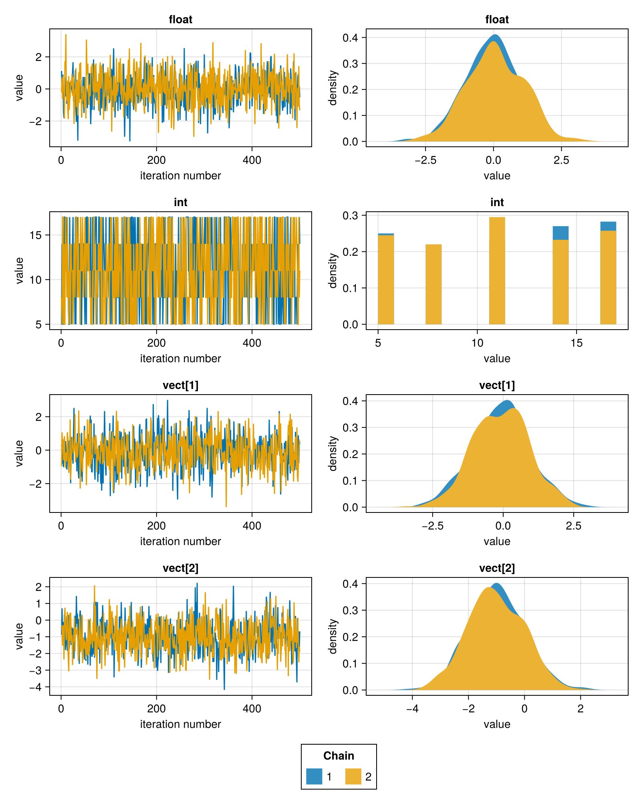
Trace plots
FlexiChains.Makie.traceplot — Function
FlexiChains.Makie.traceplot(
chn::FC.FlexiChain[, param_or_params];
kwargs...,
)Create trace plots for the specified parameters in the chain.
If no parameters are specified, this will plot all parameters in the chain. Note that non-parameter, i.e. Extra, keys are excluded by default. If you want to plot all keys, you can explicitly pass all keys with FlexiChains.Makie.traceplot(chn, :).
Keyword arguments
figure::NamedTuple: Additional keyword arguments passed to theMakie.Figureconstructor.axis::NamedTuple: Additional keyword arguments passed to theMakie.Axisconstructor for each subplot.legend::NamedTuple: Additional keyword arguments passed to theMakie.Legendconstructor, if the legend is added.legend_position::Symbol: Position of the legend. This can be either:right,:bottomor:nonefor no legend.layout: eithernothing(the default), or a tuple of(nrows, ncols)specifying the grid layout for the subplots.
All other keyword arguments are passed to the original Makie plotting function.
FlexiChains.Makie.traceplot! — Function
FlexiChains.Makie.traceplot!Mutating version of FlexiChains.Makie.traceplot, for use with existing Makie.Axis objects.
FM.traceplot(chn)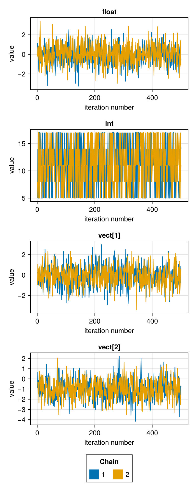
Density plots
Makie.density — Function
Makie.density(
chn::FC.FlexiChain[, param_or_params];
pool_chains::Bool=false,
kwargs...,
)Create density plots for the specified parameters in the chain.
If no parameters are specified, this will plot all parameters in the chain. Note that non-parameter, i.e. Extra, keys are excluded by default. If you want to plot all keys, you can explicitly pass all keys with Makie.density(chn, :).
Keyword arguments
pool_chains::Bool: whether to pool data from all chains into a single plot, or to plot each chain separately. Defaults tofalse.figure::NamedTuple: Additional keyword arguments passed to theMakie.Figureconstructor.axis::NamedTuple: Additional keyword arguments passed to theMakie.Axisconstructor for each subplot.legend::NamedTuple: Additional keyword arguments passed to theMakie.Legendconstructor, if the legend is added.legend_position::Symbol: Position of the legend. This can be either:right,:bottomor:nonefor no legend.layout: eithernothing(the default), or a tuple of(nrows, ncols)specifying the grid layout for the subplots.
All other keyword arguments are passed to the original Makie plotting function.
Makie.density(chn)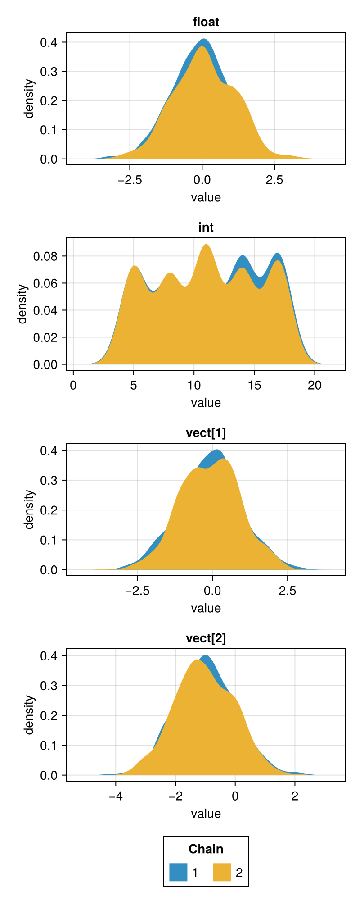
Histograms
Makie.hist — Function
Makie.hist(
chn::FC.FlexiChain[, param_or_params];
pool_chains::Bool=false,
kwargs...,
)Create histograms for the specified parameters in the chain.
If no parameters are specified, this will plot all parameters in the chain. Note that non-parameter, i.e. Extra, keys are excluded by default. If you want to plot all keys, you can explicitly pass all keys with Makie.hist(chn, :).
Keyword arguments
pool_chains::Bool: whether to pool data from all chains into a single plot, or to plot each chain separately. Defaults tofalse.figure::NamedTuple: Additional keyword arguments passed to theMakie.Figureconstructor.axis::NamedTuple: Additional keyword arguments passed to theMakie.Axisconstructor for each subplot.legend::NamedTuple: Additional keyword arguments passed to theMakie.Legendconstructor, if the legend is added.legend_position::Symbol: Position of the legend. This can be either:right,:bottomor:nonefor no legend.layout: eithernothing(the default), or a tuple of(nrows, ncols)specifying the grid layout for the subplots.
All other keyword arguments are passed to the original Makie plotting function.
Makie.stephist — Function
Makie.stephist(
chn::FC.FlexiChain[, param_or_params];
pool_chains::Bool=false,
kwargs...,
)Create a step histogram for the specified parameters in the chain.
If no parameters are specified, this will plot all parameters in the chain. Note that non-parameter, i.e. Extra, keys are excluded by default. If you want to plot all keys, you can explicitly pass all keys with Makie.stephist(chn, :).
Keyword arguments
pool_chains::Bool: whether to pool data from all chains into a single plot, or to plot each chain separately. Defaults tofalse.figure::NamedTuple: Additional keyword arguments passed to theMakie.Figureconstructor.axis::NamedTuple: Additional keyword arguments passed to theMakie.Axisconstructor for each subplot.legend::NamedTuple: Additional keyword arguments passed to theMakie.Legendconstructor, if the legend is added.legend_position::Symbol: Position of the legend. This can be either:right,:bottomor:nonefor no legend.layout: eithernothing(the default), or a tuple of(nrows, ncols)specifying the grid layout for the subplots.
All other keyword arguments are passed to the original Makie plotting function.
Makie.hist(chn)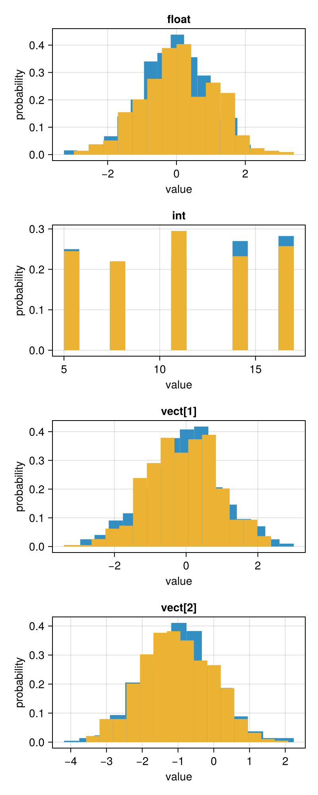
Mixed density plots
FlexiChains.Makie.mixeddensity — Function
FlexiChains.Makie.mixeddensity(
chn::FC.FlexiChain[, param_or_params];
pool_chains::Bool=false,
kwargs...,
)Create mixed density plots (i.e., density plots for continuous parameters and histograms for discrete parameters) for the specified parameters in the chain.
If no parameters are specified, this will plot all parameters in the chain. Note that non-parameter, i.e. Extra, keys are excluded by default. If you want to plot all keys, you can explicitly pass all keys with FlexiChains.Makie.mixeddensity(chn, :).
Keyword arguments
pool_chains::Bool: whether to pool data from all chains into a single plot, or to plot each chain separately. Defaults tofalse.figure::NamedTuple: Additional keyword arguments passed to theMakie.Figureconstructor.axis::NamedTuple: Additional keyword arguments passed to theMakie.Axisconstructor for each subplot.legend::NamedTuple: Additional keyword arguments passed to theMakie.Legendconstructor, if the legend is added.legend_position::Symbol: Position of the legend. This can be either:right,:bottomor:nonefor no legend.layout: eithernothing(the default), or a tuple of(nrows, ncols)specifying the grid layout for the subplots.
All other keyword arguments are passed to the original Makie plotting function.
FlexiChains.Makie.mixeddensity! — Function
FlexiChains.Makie.mixeddensity!Mutating version of FlexiChains.Makie.mixeddensity, for use with existing Makie.Axis objects.
FM.mixeddensity(chn)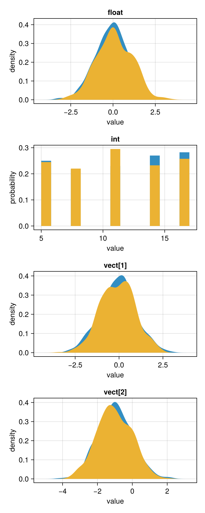
Running mean plots
FlexiChains.Makie.meanplot — Function
FlexiChains.Makie.meanplot(
chn::FC.FlexiChain[, param_or_params];
kwargs...,
)Plot the running mean of the specified parameter(s) in the given FlexiChain using Makie.
If no parameters are specified, this will plot all parameters in the chain. Note that non-parameter, i.e. Extra, keys are excluded by default. If you want to plot all keys, you can explicitly pass all keys with FlexiChains.Makie.meanplot(chn, :).
Keyword arguments
figure::NamedTuple: Additional keyword arguments passed to theMakie.Figureconstructor.axis::NamedTuple: Additional keyword arguments passed to theMakie.Axisconstructor for each subplot.legend::NamedTuple: Additional keyword arguments passed to theMakie.Legendconstructor, if the legend is added.legend_position::Symbol: Position of the legend. This can be either:right,:bottomor:nonefor no legend.layout: eithernothing(the default), or a tuple of(nrows, ncols)specifying the grid layout for the subplots.
All other keyword arguments are passed to the original Makie plotting function.
FlexiChains.Makie.meanplot! — Function
FlexiChains.Makie.meanplot!Mutating version of FlexiChains.Makie.meanplot, for use with existing Makie.Axis objects.
FM.meanplot(chn)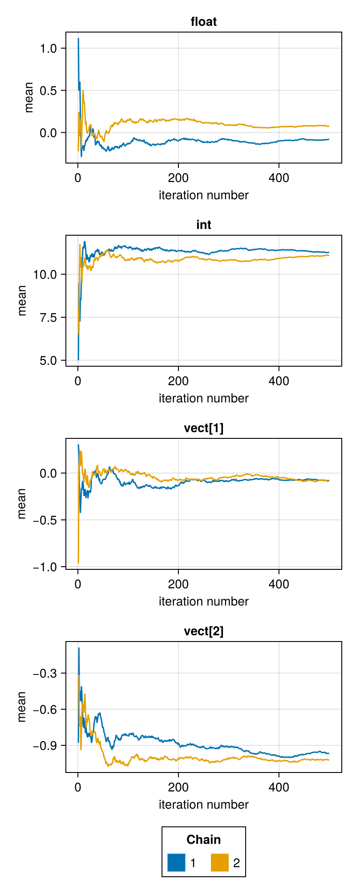
Autocorrelation plots
FlexiChains.Makie.autocorplot — Function
FlexiChains.Makie.autocorplot(
chn::FC.FlexiChain[, param_or_params];
lags=FlexiChains.PlotUtils.default_lags(chn),
demean=true,
kwargs...,
)Plot the autocorrelation of the specified parameter(s) in the given FlexiChain using Makie.
If no parameters are specified, this will plot all parameters in the chain. Note that non-parameter, i.e. Extra, keys are excluded by default. If you want to plot all keys, you can explicitly pass all keys with FlexiChains.Makie.autocorplot(chn, :).
Keyword arguments
lags: the lags at which to compute the autocorrelation. Defaults to1:min(niters-1, round(Int, 10*log10(niters))).demean: whether to subtract the mean before computing the autocorrelation. Defaults totrue.figure::NamedTuple: Additional keyword arguments passed to theMakie.Figureconstructor.axis::NamedTuple: Additional keyword arguments passed to theMakie.Axisconstructor for each subplot.legend::NamedTuple: Additional keyword arguments passed to theMakie.Legendconstructor, if the legend is added.legend_position::Symbol: Position of the legend. This can be either:right,:bottomor:nonefor no legend.layout: eithernothing(the default), or a tuple of(nrows, ncols)specifying the grid layout for the subplots.
All other keyword arguments are passed to the original Makie plotting function.
FlexiChains.Makie.autocorplot! — Function
FlexiChains.Makie.autocorplot!Mutating version of FlexiChains.Makie.autocorplot, for use with existing Makie.Axis objects.
FM.autocorplot(chn)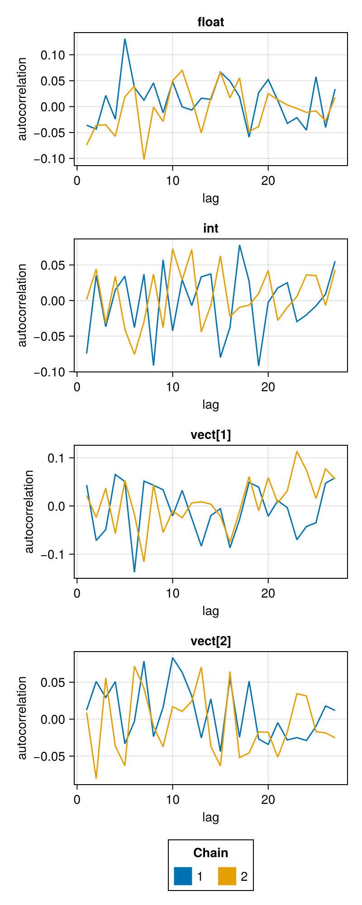
Rank plots
FlexiChains.Makie.rankplot — Function
FlexiChains.Makie.rankplot(
chn::FC.FlexiChain[, param_or_params];
overlay::Bool=false,
kwargs...,
)Create rank plots for the specified parameters in the chain.
If no parameters are specified, this will plot all parameters in the chain. Note that non-parameter, i.e. Extra, keys are excluded by default. If you want to plot all keys, you can explicitly pass all keys with FlexiChains.Makie.rankplot(chn, :).
Keyword arguments
overlay::Bool: whether to overlay the histograms for all chains on the same axis, or to plot each chain separately. Defaults tofalse.figure::NamedTuple: Additional keyword arguments passed to theMakie.Figureconstructor.axis::NamedTuple: Additional keyword arguments passed to theMakie.Axisconstructor for each subplot.legend::NamedTuple: Additional keyword arguments passed to theMakie.Legendconstructor, if the legend is added.legend_position::Symbol: Position of the legend. This can be either:right,:bottomor:nonefor no legend.layout: eithernothing(the default), or a tuple of(nrows, ncols)specifying the grid layout for the subplots.
All other keyword arguments are passed to the original Makie plotting function.
FlexiChains.Makie.rankplot! — Function
FlexiChains.Makie.rankplot!Mutating version of FlexiChains.Makie.rankplot, for use with existing Makie.Axis objects.
FM.rankplot(chn)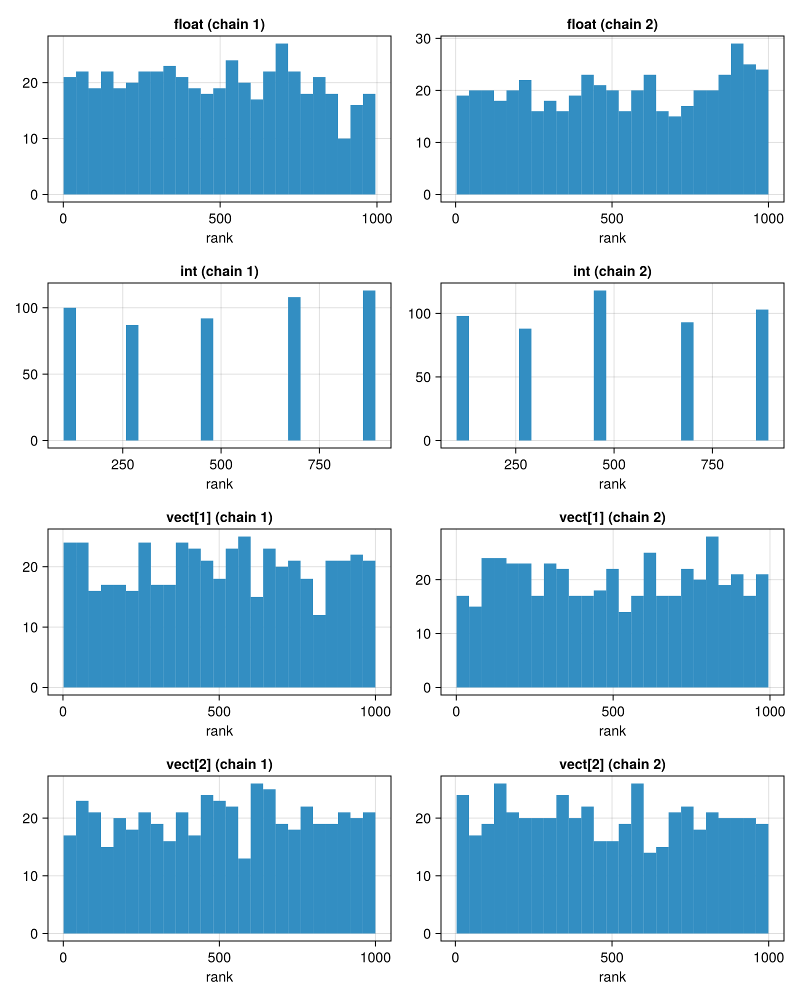
Violin plots
Makie.violin — Function
Makie.violin(
chn::FC.FlexiChain[, param_or_params];
pool_chains::Bool=false,
with_box::Bool=false,
box_kwargs::NamedTuple=(;),
kwargs...,
)Create violin plots for the specified parameters in the chain.
If no parameters are specified, this will plot all parameters in the chain. Note that non-parameter, i.e. Extra, keys are excluded by default. If you want to plot all keys, you can explicitly pass all keys with Makie.violin(chn, :).
Keyword arguments
pool_chains::Bool: whether to pool data from all chains into a single plot, or to plot each chain separately. Defaults tofalse.with_box::Bool: whether to overlay a box plot on each violin plot. Defaults tofalse.box_kwargs::NamedTuple: keyword arguments passed toMakie.boxplot!whenwith_box=true. FlexiChains has a set of default boxplot kwargs that are always used, but they can be overridden by passingbox_kwargs.figure::NamedTuple: Additional keyword arguments passed to theMakie.Figureconstructor.axis::NamedTuple: Additional keyword arguments passed to theMakie.Axisconstructor for each subplot.legend::NamedTuple: Additional keyword arguments passed to theMakie.Legendconstructor, if the legend is added.legend_position::Symbol: Position of the legend. This can be either:right,:bottomor:nonefor no legend.layout: eithernothing(the default), or a tuple of(nrows, ncols)specifying the grid layout for the subplots.
All other keyword arguments are passed to the original Makie plotting function.
Makie.violin(chn; with_box=true)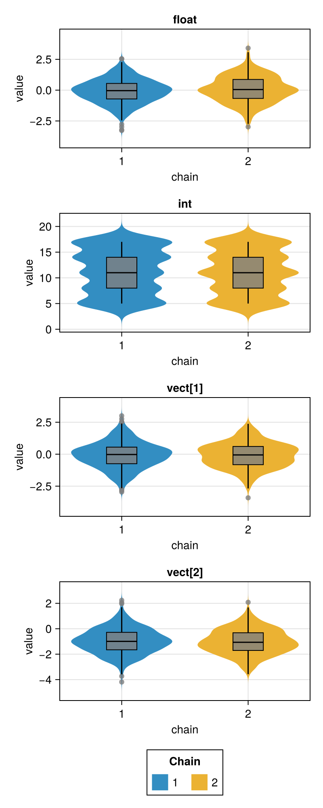
Forest plots
To get a 'half-eye' look similar to R's ggdist package, you can compose forestplot! and ridgeline!. See e.g. the example here.
FlexiChains.Makie.forestplot — Function
FlexiChains.Makie.forestplot(
chn::FC.FlexiChain[, param_or_params];
point::Symbol=:median,
interval::Symbol=:quantile,
hdi_method::Symbol=:unimodal,
levels::Tuple=(0.66, 0.95),
pool_chains::Bool=false,
kwargs...,
)Create a forest (caterpillar) plot for the specified parameters in the chain. Each parameter is shown as a point estimate with one or more credible interval bars.
If no parameters are specified, this will plot all parameters in the chain. Note that non-parameter, i.e. Extra, keys are excluded by default. If you want to plot all keys, you can explicitly pass all keys with FlexiChains.Makie.forestplot(chn, :).
Keyword arguments
point::Symbol: the point estimate to use. Must be:meanor:median. Defaults to:median.interval::Symbol: the method to use for computing credible intervals. Must be:quantileor:hdi. Defaults to:quantile. Note that to use:hdiyou must have PosteriorStats.jl loaded.hdi_method::Symbol: ifinterval=:hdi, the method to use for computing HDIs. Defaults to:unimodal; please see the PosteriorStats.jl documentation for details.levels: a tuple of credible interval widths, e.g.(0.5, 0.94)for 50% and 94% intervals. Wider intervals are drawn with thinner lines.pool_chains::Bool: whether to pool data from all chains or plot each chain separately. Defaults tofalse.figure::NamedTuple: Additional keyword arguments passed to theMakie.Figureconstructor.axis::NamedTuple: Additional keyword arguments passed to theMakie.Axisconstructor for each subplot.legend::NamedTuple: Additional keyword arguments passed to theMakie.Legendconstructor, if the legend is added.legend_position::Symbol: Position of the legend. This can be either:right,:bottomor:nonefor no legend.layout: eithernothing(the default), or a tuple of(nrows, ncols)specifying the grid layout for the subplots.
All other keyword arguments are passed to the original Makie plotting function.
FlexiChains.Makie.forestplot! — Function
FlexiChains.Makie.forestplot!Mutating version of FlexiChains.Makie.forestplot, for use with existing Makie.Axis objects.
FM.forestplot(chn)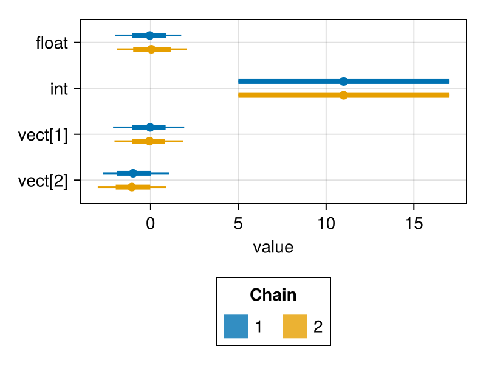
Ridgeline plots
To get a 'half-eye' look similar to R's ggdist package, you can compose forestplot! and ridgeline!. See e.g. the example here.
FlexiChains.Makie.ridgeline — Function
FlexiChains.Makie.ridgeline(
chn::FC.FlexiChain[, param_or_params];
scale::Float64=0.8,
pool_chains::Bool=false,
kwargs...,
)Create a ridgeline (density ridge) plot for the specified parameters in the chain. Each parameter is shown as a filled kernel density estimate stacked vertically.
If no parameters are specified, this will plot all parameters in the chain. Note that non-parameter, i.e. Extra, keys are excluded by default. If you want to plot all keys, you can explicitly pass all keys with FlexiChains.Makie.ridgeline(chn, :).
Keyword arguments
scale::Float64: height of each ridge relative to the spacing between parameters. Values greater than1.0cause ridges to overlap. Defaults to0.8.pool_chains::Bool: whether to pool data from all chains or plot each chain separately. Defaults tofalse.figure::NamedTuple: Additional keyword arguments passed to theMakie.Figureconstructor.axis::NamedTuple: Additional keyword arguments passed to theMakie.Axisconstructor for each subplot.legend::NamedTuple: Additional keyword arguments passed to theMakie.Legendconstructor, if the legend is added.legend_position::Symbol: Position of the legend. This can be either:right,:bottomor:nonefor no legend.layout: eithernothing(the default), or a tuple of(nrows, ncols)specifying the grid layout for the subplots.
All other keyword arguments are passed to the original Makie plotting function.
FlexiChains.Makie.ridgeline! — Function
FlexiChains.Makie.ridgeline!Mutating version of FlexiChains.Makie.ridgeline, for use with existing Makie.Axis objects.
FM.ridgeline(chn)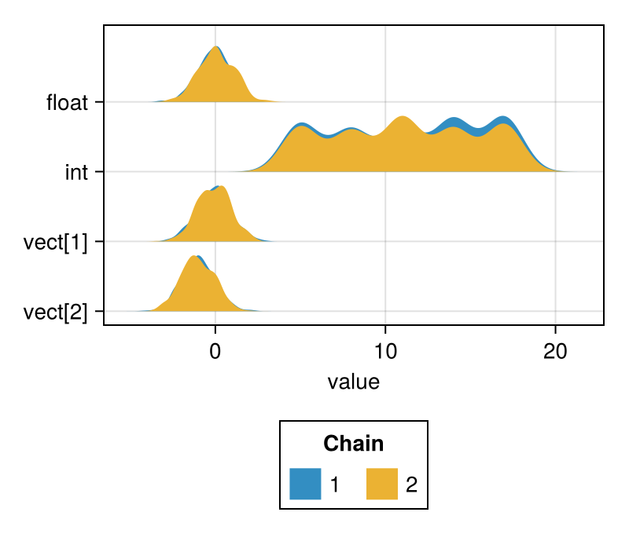
Pushforward plots
These plots are based on Michael Betancourt's mcmc_visualization_tools. We include a worked example to motivate and demonstrate the use of these plots.
Example
A pushforward distribution is obtained by mapping a function over a distribution: specifically, if some random variable θ has distribution p(θ), then the pushforward of θ through a function f is the distribution of Y = f(θ).
In Bayesian inference, we're often interested in taking posterior draws θ ~ p(θ | D) (as represented in a chain) and pushing this through some function f to obtain a new distribution. For example, f may be the function which generates posterior predictive draws, in which case the pushforward distribution is the posterior predictive distribution.
Each parameter draw θ yields a different draw of f, so the spread of f inherits posterior uncertainty. The pushforward plots in this section visualise that uncertainty as nested quantile bands, displayed as either a fitted curve (pushforward_continuous), per-group summaries (pushforward_discrete), or predictive histograms (pushforward_hist).
FlexiChains.Makie.pushforward_continuous — Function
FlexiChains.Makie.pushforward_continuous(chn, param_or_params; x_grid, kwargs...)Plot the marginal posterior of each component of an array parameter as a quantile ribbon, forming a "function envelope" over x_grid. Useful for visualising how a functional quantity (e.g. a fitted curve or spectrum) varies with posterior uncertainty.
This is a port of Michael Betancourt's plot_conn_pushforward_quantiles.
Keyword arguments
x_grid: the x-values to plot against.levels: vector of interval masses in(0, 1), e.g.[0.95]for the central 95% interval. One nested band is drawn per level. Defaults to[0.2, 0.4, 0.6, 0.8].alpha_limits: a tuple of two values specifying the lower and upper limit of alpha values that the quantile ribbons should span. Values must be sorted and in[0, 1].figure,axis:NamedTuples forwarded toMakie.Figure/Makie.Axis.
FlexiChains.Makie.pushforward_continuous! — Function
Mutating version of FlexiChains.Makie.pushforward_continuous.
FlexiChains.Makie.pushforward_discrete — Function
FlexiChains.Makie.pushforward_discrete(chn, param_or_params; vertical=true, kwargs...)Plot each component of an array parameter as an independent quantile bar, with nested intervals shown as stacked bands. Unlike pushforward_continuous, components are not connected; each bar is separated from its neighbours, making this appropriate when the components have no natural ordering or functional relationship (e.g. group-level intercepts in a hierarchical model).
This function is a port of Michael Betancourt's plot_disc_pushforward_quantiles.
Keyword arguments
vertical: iftrue, bars are vertical; otherwise horizontal. Defaults totrue.levels: vector of interval masses in(0, 1), e.g.[0.95]for the central 95% interval. One nested band is drawn per level. Defaults to[0.2, 0.4, 0.6, 0.8].alpha_limits: a tuple of two values specifying the lower and upper limit of alpha values that the quantile ribbons should span. Values must be sorted and in[0, 1].figure,axis:NamedTuples forwarded toMakie.Figure/Makie.Axis.
FlexiChains.Makie.pushforward_discrete! — Function
Mutating version of FlexiChains.Makie.pushforward_discrete.
FlexiChains.Makie.pushforward_hist — Function
FlexiChains.Makie.pushforward_hist(chn, param_or_params; observed=nothing, nbins=25, kwargs...)Plot a histogram of binned predictions with nested quantiles for posterior predictive checking. Optionally overlay observed data to show to what degree the predictive distribution agrees with the observations.
This function is a port of Michael Betancourt's plot_hist_quantiles.
Keyword arguments
observed: vector of observed values; its histogram (same bins) is overlaid as a line.nbins: number of equal-width bins. Defaults to25.levels: vector of interval masses in(0, 1), e.g.[0.95]for the central 95% interval. One nested band is drawn per level. Defaults to[0.2, 0.4, 0.6, 0.8].alpha_limits: a tuple of two values specifying the lower and upper limit of alpha values that the quantile ribbons should span. Values must be sorted and in[0, 1].figure,axis:NamedTuples forwarded toMakie.Figure/Makie.Axis.
FlexiChains.Makie.pushforward_hist! — Function
Mutating version of FlexiChains.Makie.pushforward_hist.
Customisation
As described in the general interface section above, all of the above functions accept keyword arguments to control the appearance of the plot.
The figure, axis, and legend arguments (which can be, e.g., NamedTuples) allow you to pass extra keyword arguments to the Figure, Axis, and Legend constructors. Then, most other keyword arguments are forwarded to the underlying Makie plotting functions; please refer to the Makie documentation for more details on these.
Finally, there are also some special keyword arguments which are handled by FlexiChains. Here are some examples of these in action.
Custom layout
By default, plots are arranged with one parameter per row. You can pass a tuple of (nrows, ncols) as the layout keyword argument to change this:
Makie.density(chn; layout=(2, 2))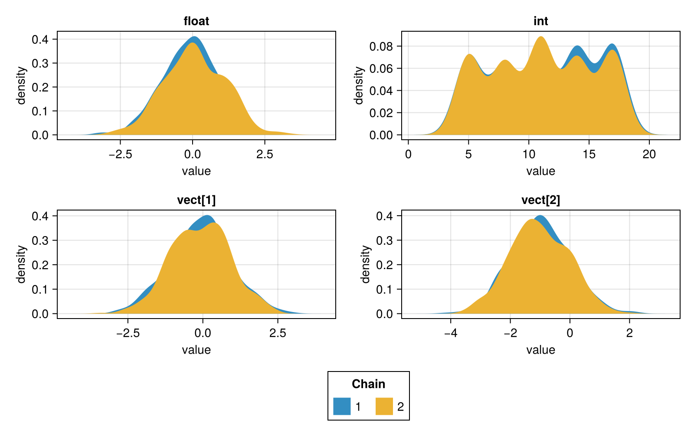
Custom colours
Pass a vector of colours (one per chain) via the color keyword, or a categorical colormap via colormap:
FM.traceplot( chn, [@vn(float), @vn(int)]; color=[(:red, 0.6), (:blue, 0.6)], # or e.g. colormap=:tab10)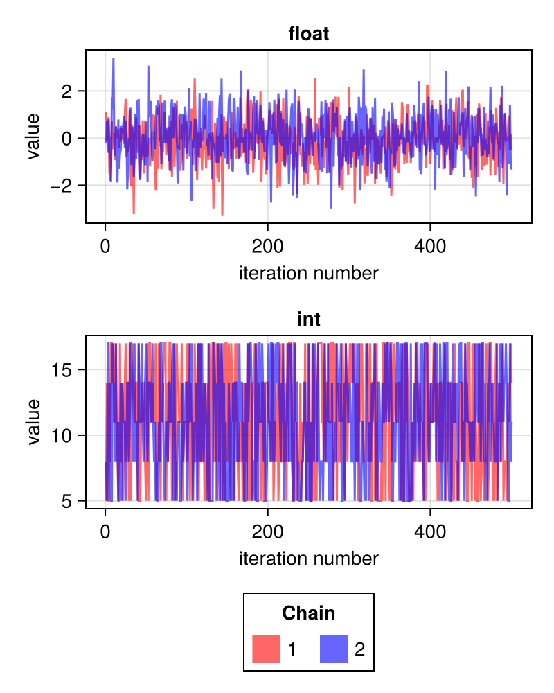
To get the best effects with colormap, you should pass a categorical colormap such as :tab10. Continuous colormaps like :viridis will give poor results since it will use the first n colours of the colormap, which are all very similar!
Legend position
Use legend_position to move the legend (:bottom, :right, or :none):
FM.traceplot(chn; legend_position=:right)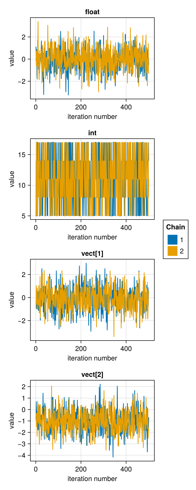